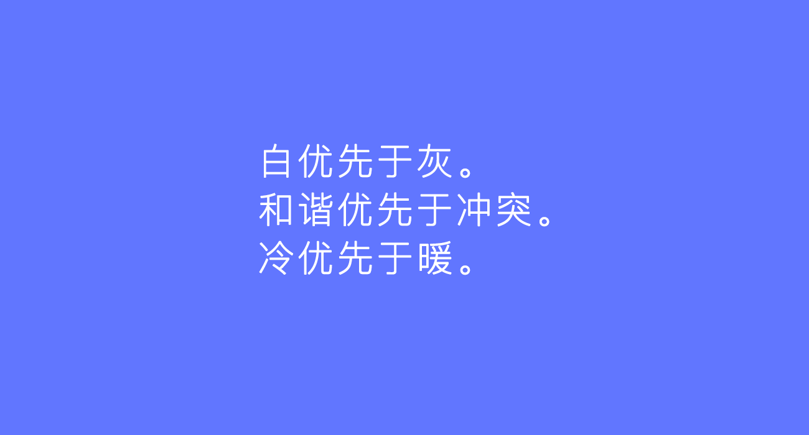

不管对于新手还是老司机，色彩运用总是设计中最具争议性也是最棘手的问题之一。颜色具有各色文化、社会以及情感的意义。尽管设计师对色彩有近乎无限的选择，也无法让制作调色板变得容易些。
在这篇文章中，我们将分享一些打造优质色板的小窍门。欢迎大家在评论区发表意见以及随意分享你们在工作中运用到的其他技巧。
1. 三个原则
在开始挑选颜色之前，我总会想起Dustin Senos所写关于设计原则的那篇短文。他们运用诸如“方向鲜明优先于多种选择”，“因地制宜优先于一成不变”，“持续改进优先于一次完结” 这些原则。我认为这些原则同样适用于色彩搭配：白优先于灰；协调优先于冲突；冷色优先于暖色。工作中牢记这些原则，把它们作为一种思路的模型，就像是UX设计师创建用户模型指导工作。
2. 沿直线选择颜色（HSB模式）
在调色板上，让所选颜色保持在一条直线上，无论是对角线事实从左到右的直线上，这会让调色板中的颜色看起来是成系列并相互关联。这套颜色可以用在激活状态和未激活状态的按钮、边框或者背景当中。我们也可以把取色点固定在同一位置然后调整色相滑动器来选取颜色，这样可以创造出像上图中间一样既惊艳又和谐的色板。
3. 保持敏锐，保持耐心
一个细微的调整就能让配色方案的整体效果产生巨大的变化，所以保持敏锐和做小范围调整的非常重要。举例来说，选择冷灰或者暖灰能使设计的协调性显著提升。我们可以通过多次练习、深入观察思考以及反复修改等方法来提升我们对颜色的敏感度。
4. 运用混合模式

我用混合模式来创造惊艳的色板。通过简单的创建两个叠加形状，然后选择“正片叠底”模式，我们得到一组三个相配的颜色。在白色背景上，我们还可以调节透明度来快速调整颜色深浅。我发现反方向也是值得一试的：一个黑色背景，与“滤色”混合模式相结合。混合模式为色彩之间的相互作用提供了新的方式，这种方法被有经验的设计师广泛运用。
5. 利用Framer中的循环色板
最近在Framer中，我发现一个由四个不同色调和透明度的旋转方形组成的原型范例，它看起来真的很棒。所以我立刻开启Framer通过简单循环创造了一些调色板。先设定一个起始背景色，然后用色环和透明度来制造颜色。色环设定在0度到360度之间，透明度在0到1之间（可以是小数），依靠这些数字我们能得到不同的色板。我尝试将Sketch和Framer一起用，来看某个颜色在色彩循环中的外观，这种方法很奏效。为了选取Framer中的颜色并运用在设计当中，我先在Framer画布中截屏，再将截屏粘贴到Sketch里，最后用取色器吸取颜色。
6. 邻近区域中，颜色越少越好
选出优质的颜色是一回事，能把它们有效运用于视觉设计中是另一回事。有时候色板颜色看起来很棒，可一旦应用于特定的设计项目就完蛋了。使用相近且尽可能少的颜色能使整个设计看起来平静协调。例如，在文本、标志和边框中运用几种不同的蓝色看起来会很棒。这个窍门的要诀在于：当我们真的需要突出强调某些重点时，再选择使用其他颜色。
7. 测试颜色在深色与浅色背景中的表现
我曾经做过一个项目，这个项目要求色彩系统是可扩展的。在系统中我选用了大量具有细微差别的颜色，两相近颜色之间往往难以区分。所以我将这些颜色复制下来，放到深色背景上寻找不同的视觉体验。这种方法帮助我更好的做出决定。
8. 保持色彩的亮度和饱和度
若你想在视觉设计中得到有吸引力的调色板，保险的做法是用取色器在色板的右上角吸取颜色。在自然界中，色彩被灰尘和泥土附上了灰色和黑色。虽然在色彩中添加灰或黑能让设计看上去有厚重感，但是运用太多低纯度色调会让人感觉脏。所以我尽可能用干净明亮的色彩系统来做设计。
9. 用遮罩层改变颜色
想象透过一张薄薄的半透明纸片，纸片下方的颜色会变浅。我们可以在Sketch中通过创建一个叫做“遮罩”的形状来模拟这一现象。我们可以运用透明度、混合模式，或者两者结合，使颜色在白色和黑色过滤器下变浅或变深。在做UI项目时，我会用这一技巧来临时将界面中整个区域变浅或加深。这种方法比分别改变颜色更快更容易，而且能很好的保持色彩之间的协调性和关联性。
上图分别为：
黑色图层，叠加混合模式，透明度50%（增强饱和度）
白色涂层，普通混合模式，透明度50%（颜色减淡）
黑色涂层，普通混合模式，透明度50%（颜色加深）
10. 颜色一致

当我设定背景色的时候，首先会吸取前景色并将它变浅或加深。相较于中性灰色（介于白和黑之间），我倾向于选择带有轻微冷暖色调的灰色来优化项目的人文体验。
11. 阴影与光线
最后，要注意浅色和深色对我们视知觉深度的影响。在深色背景上，较浅的颜色似乎在最前面；然而在浅色背景上，较深的颜色又成了最突出部分。我常常按照光照来定义它们：左图最上方的圆，我们可以想象它被阳光直射，而右图下方的圆则完全逆着光，因此形成了一个深色的轮廓。
全部评论
Linux Story / 2017-08-22 / 14:43
在一些工具类型的应用中尤其会遇到这个问题，结合场景，在用户需要的时候展示一个商业化的功能，是不会影响用户体验的。比如定完机票，展示一个预约接送机的功能；购买完团购卷展示一个能订位的APP； 产品的商业化不是必然会影响到用户体验，关键是给用户呈现的商业化对用户而言是不是有价值
Linux Story / 2017-08-22 / 14:43
在一些工具类型的应用中尤其会遇到这个问题，结合场景，在用户需要的时候展示一个商业化的功能，是不会影响用户体验的。比如定完机票，展示一个预约接送机的功能；购买完团购卷展示一个能订位的APP； 产品的商业化不是必然会影响到用户体验，关键是给用户呈现的商业化对用户而言是不是有价值
发表评论